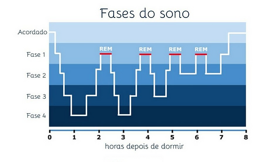

Escrevi alguns pontos que podem ajudá-los em seu desempenho nos estudos. Pontos para melhorar seu foco e eficiência de um jeito saudável e organizado. Lhes garanto que valerá a pena passar um tempo lendo estes texto e segui-los caso queiram 🙂.
Organizar em uma lista, até por categorias se necessário é ótimo para lhe dar uma visão de tudo o que você precisa fazer e quanto tempo levará para cumprir cada tarefa, traçando objetivos e sendo gratificado ao cumprir, o efeito de check é muito prazeroso e recompensador. Você pode inclusive adicionar passo a passo para finalizar uma tarefa até que ela esteja totalmente finalizada, assim ficará mais simples realizar tarefas grandes e complexas. Sempre que surgir uma atividade nova, tente fazer logo, mesmo que tenha um longo prazo de entrega.
A rotina irá ser como um caminho ou guia para suas atividades diárias, irá impedir que esqueça de algo e poderá também definir tempos e períodos para cada atividade. Caso suas atividades variem a cada dia, poderá fazer uma rotina mais maleável/adaptável, anotando somente os tópicos e marcando como concluído ao finalizar.
Pomodoro é uma técnica de foco, para se concentrar em atividades que requerem foco por um tempo prolongado, como estudar, consiste em dividir de forma alternada tempos de estudo e descanso, como 25-40 min de foco total, sem qualquer distração, seja ela uma distração de celular, jogos, séries ou até mesmo outras atividades ou tarefas, o importante é que neste período você se dedique a somente isto, por isto um bônus, deixe uma caneta e um papel ao seu lado para anotar coisas que lembrar, para fazer depois. Depois que acabar seu tempo de estudo, deixe 5-10min de descanso, só não prolongue muito, nesse período você pode usar o mecanismo da recompensa(fazer algo que gosta) ou simplesmente não fazer nada, você pode levantar, andar um pouco, beber água, ir ao banheiro; quando voltar deste tempo de descanso inicie novamente um período de foco. Então, em suma, ficaria assim:
25min - 5min - 25min - 5min - 25min - 5min - 25min
Você pode adaptar para o tempo que ficar melhor para você, eu pessoalmente uso 40 min / 10 min, pois não é um tempo muito longo ou curto demais. Depois de uns 4 períodos de foco, o ideal é que descanse por tempo maior (10-18min), já que até lá você pode estar mais cansado(a).
Caso você esteja em flow, num fluxo de foco, e o cronômetro chegar ao fim, você pode continuar pelo tempo que for necessário, sem esquecer das pausas de descanso.
O ambiente molda você, então mude seu ambiente até que ele esteja condizente com o que você deseja alcançar, um ambiente bagunçado e barulhento atrapalha totalmente a produtividade, então é importante organizar seu quarto/ambiente de estudo, celular e PC, para que evite distrações, tenha acesso fácil ao seu material de estudo e mais foco.
Defina e escreva suas metas, o porquê você tem que estudar, realização pessoal, realizar sonhos, lembre de que mesmo que você não goste e atualmente talvez se dedicar tantas horas ao estudo possa parecer sem sentido, há um motivo e valerá a pena, sacrifícios hão de ser feitos e se você não estiver disposto a enfrentar os desafios, não irá alcançar suas metas. Para tê-las de forma visível e para que sempre do motivo de estudar e se dedicar, escreva suas metas, elas o ajudarão em muitos momentos.
Para ajudar a vencer a procrastinação, desmembre as atividades maiores em pequenos objetivos, sempre marcando como concluído em sua lista ou app/site, isso irá ajudar sua percepção de progresso sem fazer tarefas maiores e cansativas por longos períodos. Vá se preparando para o início do estudo, arrume os materiais, sua cadeira e mesa, depois que tudo estiver no ponto, será então só começar, tente não pensar muito sobre o quão difícil, trabalhoso ou quanto tempo irá levar para concluir, mas apenas faça, “Just Do It”(Apenas faça).
O minimalismo será um fiel aliado na organização e foco, ao eliminar coisas desnecessárias e manter somente o essencial, seja em seu celular, PC ou quarto, irá reduzir seu tempo de procura de itens e trará para lugar mais acessível. Introduzir um layout minimalista em seu celular ou PC terá a mesma recompensa, tempo. Para o celular recomendo o app “Niagara - Launcher”, que tem uma interface bonita, simples e funcional, o permitindo até mesmo de colocar suas tarefas e lembretes na tela inicial.
Psicologia das cores: diferentes cores trazem diferentes sensações e sentimentos; isso usado por exemplo para prender sua atenção nas redes sociais, então um conselho é usar o modo preto e branco do seu celular, este que está disponível tanto para Android quanto IOS, deixando o seu celular menos atrativo e entregando a você a liberdade de focar no que é mais importante, suas metas e estudo.
Deixe suas distrações longe enquanto está estudando, só de deixar o celular próximo a você, se sentirá tentado(a) a usá-lo, então o deixe longe, ou pelo menos fora de seu campo de visão com notificações silenciadas. Caso for necessário o uso do celular para estudar, aconselho apps como AppBlock, que bloqueia apps de distração ou forest que quando em pomodoro também pode bloquear apps. É importante também combinar com sua família, para que não o(a) atrapalhe em seu tempo de estudo, converse com eles com carinho.
Muitos aparelhos celulares hoje já vem com a opção de verificar e controlar seu tempo em tela, caso precise de algum app, recomendo o AppBlock, que monitora e bloqueia os apps de acordo com suas preferências. Se você passa muito tempo nas redes ou jogando, talvez tenha mais dificuldade em iniciar e finalizar suas atividades, por isso é importante seu controle e equilíbrio quanto ao seu tempo online.
O sono é fundamental para o descanso, memória e saúde, 8 horas diárias é o recomendado, mas você tentar achar o seu tempo ideal, aquele que é suficiente para que você descanse e tenha tempo para suas atividades, para encontrá-lo, você pode por 3 dias acordar sem despertador, digo três pois no começo pode acabar dormindo mais ou menos que o necessário, isto por influência de cansaço e costume.
De verdade, digo por experiência própria como o sono me ajudou com o cansaço mental, só cuidado para não dormir demais, pois pode atrapalhar seu sono no dia seguinte ou até mesmo te deixar com a sensação de sonolência.
Outra solução para acordar sem sono é acordar num ciclo de sono leve, para saber estes períodos você pode usar o app “Calculadora de Sono - Ciclo” ou consultar o gráfico abaixo, considere o tempo que leva até pegar no sono.

Ter este período de sono definido não significa que em algum dia por uma situação específica você não possa acordar mais cedo, ou que no fim de semana você não possa acordar mais tarde, tudo isso depende de sua vivência…
Se possível, deixe o despertador longe de sua cama, para que você tenha que levantar para desligá-lo. Não ponha no modo soneca, ao acordar seu corpo libera hormônios para desperta-lo(a) e se você voltar a dormir, o corpo irá liberar hormônios do sono novamente, prejudicando seu sono e seu despertar, então para ajudá-lo(a) a acordar, beba um copo de água, lave o rosto e tome um banho logo depois de levantar.
Músicas instrumentais, sem letra, como jazz ou lofi são interessantes aos momentos de estudo, porém ainda podem te distrair, para solucionar isto você poderá ouvir enquanto estuda sons de ambientes (cafeteria, parque) ou Ruído branco (Ou demais cores). Estes podem te ajudar a não se distrair com ruídos reais; para melhor efeito, indico o uso de fones de ouvido, só tome cuidado com o volume. Todos estes sons você pode encontrar facilmente na internet, youtube e apps.
A hidratação evita problemas renais, melhoram a pele, desintoxica e mantém/regulariza o funcionamento de todos os seus órgãos e funções de seu organismo. Além de seus benefícios a seu corpo, também ajudam sua mente, aumentando sua produtividade, disposição e cognição, então, beba água :). A quantidade ideal de água varia de pessoa para pessoa, por isto recomendo que se use um app para monitorar seu consumo de água, como o app “Drink Water”. Deixe uma garrafa de água próximo enquanto estudo, servirá como um costume que irá te hidratar e ainda reduzirá o estresse.
Muitas vezes por conta do curto tempo, acabamos por comer pouco ou comer mal, o que a longo prazo pode trazer malefícios à saúde. A alimentação controla nossas emoções, nos deixando tristes e ansiosos se nos falta nutrientes, por isto recomendo uma alimentação saudável e a procura de um profissional da área para fazer um plano a você, na internet até encontra-se algumas dicas, mas sugiro que procure um profissional para o guiar no que realmente funciona.
A questão de tomar café ou não é muito pessoal, varia para cada pessoa. Se o café te ajuda a acordar de manhã, começar seu dia e aumenta seu foco, tudo bem; mas caso tire seu sono e foco, até mesmo dando tonturas e dor de cabeça, é melhor parar; para isso você pode ir tirando aos poucos, até chegar num nível saudável ou retirando por completo. Indica-se não tomar café 6h antes de dormir, para que este afete seu sono.
A atividade física traz consigo benefícios ao desempenho estudantil, trazendo mais disposição, melhor qualidade do sono, alívio de estresse, concentração, memória e bem-estar. Então, desde academia, pilates, esportes, até mesmo uma simples caminhada diária, são excelentes investimentos à sua vida acadêmica. Se alongar antes de um ciclo de pomodoro, ou levantar nos seus períodos de intervalo, podem te ajudar a eliminar desconfortos e estresse físico e mental.
A postura correta evita gastos energéticos desnecessários, previne lesões, e permite mais foco, por isso, é importante a posição correta ao estudar.

Descanse, você não é uma máquina, sua mente e corpo precisam de descanso. Separe um tempo do seu dia, colocando em sua rotina um tempo em que não irá pensar em trabalhos ou tarefas, mas irá fazer algo que gosta como ler, desenhar, assistir filmes e séries, etc.
A cultura atual condena o ócio (fazer nada), ao passo em que casos de Burnout crescem; ao ignorar o descanso, também deixam de lado a saúde mental. Se você não estiver bem, não terá a disposição e eficiência necessária para as tarefas ou “vida”. Você não está atrasado(a), está no seu tempo, tenha compaixão de si mesmo(a).
Se necessário, procure a ajuda de algum amigo, familiar ou/e profissional para auxiliá-lo(a) e conversar sobre tudo isso, suas situações em casa, na escola, organização, rotina, descanso, saúde mental. Deus abençoe❤️.
Se concentrar em fazer só uma coisa de cada vez, ao invés de várias ao mesmo tempo, irá reduzir sua ansiedade e te ajudará a focar naquela atividade específica, o que pode fazer com que você termine muito mais rápido do que interromper frequentemente, por isso, tenha sempre uma forma de anotar suas atividades e ideias que surgirem nesse tempo, para que você as cumpra depois.
Não é preciso usar todos os apps e sites da lista acima, eles serão úteis para auxiliá-lo(a) ao menos no início a adquirir hábitos específicos, depois disto poderá apagá-los, se preferir. Você também não precisa baixar todos, mas indico manter principalmente aqueles de organização e planejamento.